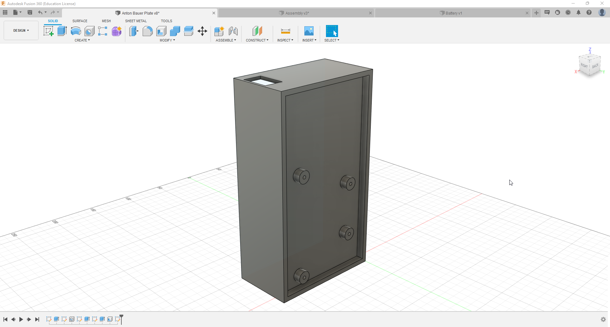
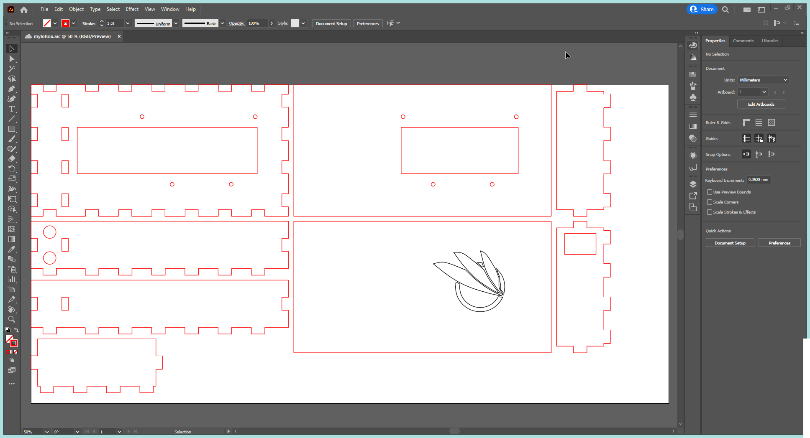
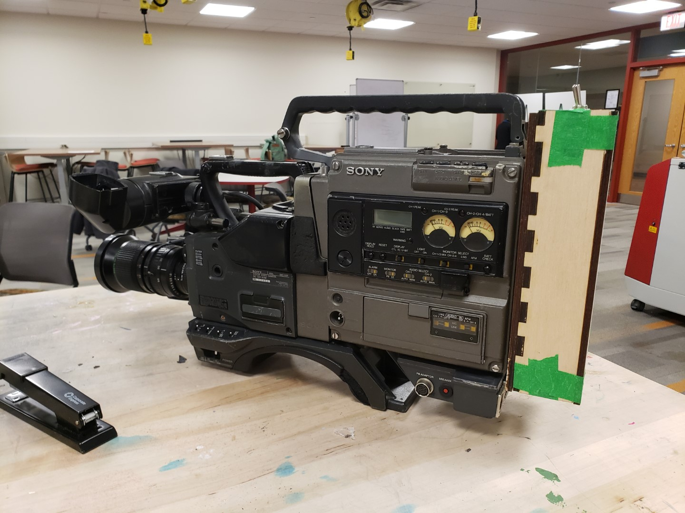

Camcorders
Yep. VHS camcorders. Why would anyone be interested in those in ? Well, as an avid collector of inconvenient technology, I'm naturally drawn towards the hassle that is shooting on tape. So when one of my pro cameras arrived without a battery, I knew not having one was simply off the table. Unfortunately, they kinda were about $100-$300 online, which is frankly out of my budget. So what's a technology-inclined fella to do? Simple: I'd build my own.
Part 0: Is this even feasible?
Before I began, I needed to know if it even made sense to do this. If I made my own, would it be cheaper? Luckily, one of my friends had a busted-up electric longboard with a good battery. I could probably use that, get a converter module and toggle switch off eBay, and bam, good to go. I priced it out, and it came to ~$50. Perfect.
Part 1: Design
Now I'll preface this by saying that I"m not very good at making things look pretty. I'm a big fan of boxes with rounded edges because that's all I know how to make. I started off by modeling the battery and converter module, so I'd have a rough guideline to work with. Then, I started making just a huge box to put everything in. After some iteration, here's what I came up with:

It's genuinely just a box. But then I had what I'm going to call An Idea™. This is like the perfect job for a laser cutter, and I get free use of one through college. So I quickly whipped up a design:

Significantly better. All I had to do was order the parts and fabricate it.
Part 2: Getting Real
I went to the makerspace, and got cutting. Unfortunately, I didn't take many pictures during the assembly proecss, but I do have this pic from after:

I haven't gotten around to gluing it together (schoolwork keeps me busy!), but once I will I'll post an update. All told I'm in for ~$50, so I'm under half the cost of a proper battery. That's a success in my book!